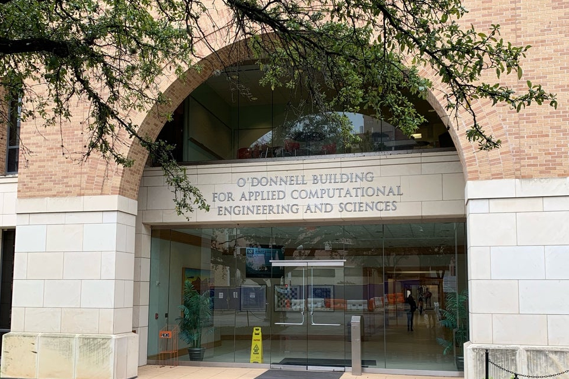

UT Austin Workshop
Friday, January 31, 2020

Join us in Austin on Friday, January 31!
In the morning we will present overviews of available observing modes and important proposal tools. In the afternoon we will explore two observing modes in more depth with hands-on exercises. Participants will walk through the process of creating an observing program: calculating exposure times with the ETC and setting up observations with the APT.
Consider bringing a laptop to the workshop to get the most out of the hands-on exercises. Please also complete these steps in preparation for the day's activities.
Light refreshments and beverages will be provided in the morning session. Lunch will not be provided, but there are plenty of great restaurants/options near the workshop venue.
Day's Schedule
- 8:30 am – Doors open, light refreshments available
- 9:00 am – Workshop start time
- 9:00 - 10:00 am – Brief introduction to JWST observing modes and details of Call for Proposals
- 10:00 am - 12:00 pm – Overview of crucial tools and resources
- 12:00 - 1:00 pm – Free time for lunch
- 1:00 - 3:00 pm – Hands-on exercises with observing mode 1
- 3:00 - 5:00 pm – Hands-on exercises with observing mode 2